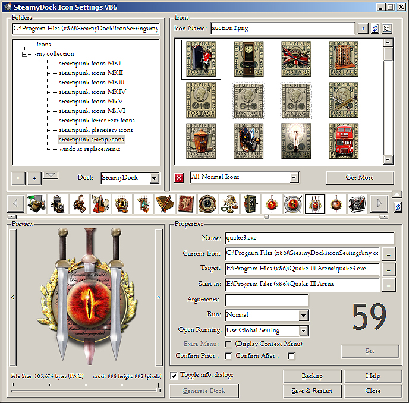
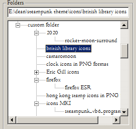
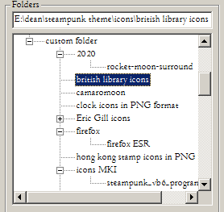
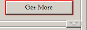
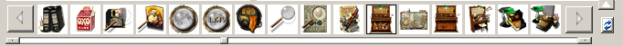
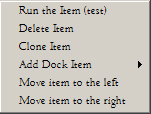
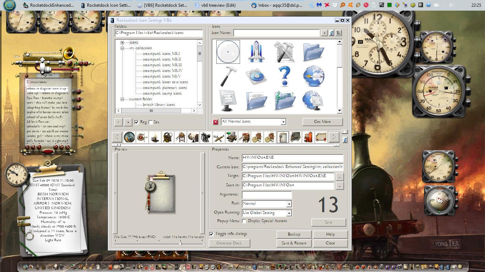

SteamyDock Enhanced Setting Utility

Fig 01. The SteamyDock/Rocketdock Enhanced Setting Utility.
This utility is a functional reproduction of Rocketdock's original
settings screen. The design is limited to enhancing what Rocketdock
already provides. This will make the utility familiar to Rocketdock
users.
Background:
This was the first utility that I created in the Steamydock suite. The
reason I created it was that Rocketdock's icon settings screen had
a
few limitations.
One of the limitations is the extended time
Rocketdock can take to
respond to a right-click on an icon in the dock. As this is how you
change
the appearance or the functionality of any
Rocketdock
icon, a delay here impedes your use of the tool.
Rocketdock has to
read its entire stored library of .ICO or.PNG
files so it can display a graphical selection of thumbnail icons for
the user to choose from. This does not affect standard operation on just a
few icons but when
your custom icon collection consists of hundreds or thousands of image files, a
right click can take 20-30 secs or more to complete (based on a typical
core2duo with
a
2.5ghz CPU with an SSD). Even on newer, faster systems there is still a
many-second
delay while each individual icon is deciphered, a thumbnail created and the results stored in the 'cache'.
Library folders such as the British Library collection consists of over
1,500 icons, so you can imagine using a folder
such as these, the subsequent delay would prove
a serious bug that affects Rocketdock's usability. In fact, I set out to
re-write Rocketdock's settings screen just to resolve this single bug but
in so doing I started to enhance what it provides in general.
This utility improves upon the original in certain areas:
- You can flip to the next Rocketdock item without having to
leave the settings screen completely, as you had to before.
- It indicates by number which Rocketdock item is currently
selected.
- The user can delete unwanted icons directly from the file
thumbnail display.
- The icon preview can be resized so the user can see how the
icon will look in the dock at different sizes.
- There are tooltips for all controls (before there were
none).
- There is now a readily available help facility - you are reading it.
- The images in the thumbnail view are now more visible at
64x64 rather than 32x32 as they were before.
- The user can flip between the new file list mode and a thumbnail view as
it suits.
- The new "get more" button is no longer a dead link as it was with Rocketdock but now
takes you to a useful location where there are a lot more icons for the
user to download.
- There is a working icon type filter allowing you to select
just one type of icon. The old drop-down was non-functional.
- The user can refresh the file list at any time if there
have been any changes to a folder.
- The utility saves copies of the settings.ini file so that
you can always revert your dock back to an earlier state.
- There are many more icon options for automatically creating
icon entries.
- It provides a steampunk library of various unique icons.
- The dock is still fully functional while this utility is
operating.
- It runs many times faster on the critical icon thumbnail
view, taking less than one second rather than 2-3 secs or much more.
- There is now an icon 'map' so the user can change the dock icon order within the settings tool.
- The code is open source so that a user can change the
utility themselves.
Note: If you hover your mouse cursor on the various
components that comprise the utility a tooltip will appear that will
give more information on each item. There is a help button on the
bottom right that will provide further detail at any time. Presing CTRL+H will give you an instant HELP pop up.
The tool is designed to operate with both Rocketdock and SteamyDock, the
open source replacement for Rocketdock. SteamyDock is a work in
progress so please bear that in mind when any reference to SteamyDock
is made in this documentation.
This program will be available in two flavours. The first is a VB6
version, this is the original. The second will be a VB.NET version, not
yet available. The two will be functionally the same, in almost all
respects. The choice
of which version to use will be entirely up to you.
The VB.NET version has yet to be completed but when done will
future-proof this utility. Regardless, the VB6
version should work on Windows 10 for the 'foreseeable future' which
means years and years yet to come as of 2021. Note
that the VB6 version will also operate on ReactOS, a 32bit-only Windows clone.
32bits!, I hear you say? - The VB6 version is of course 32 bit by default as
that is all
a VB6
application can ever be. VB6 is by default a 32bit language. Some users
see running a 32bit program as a limitation. It is
not really, because
of course, 32-bit applications run just fine on all versions of 64-bit
Windows and this dock certainly does not need 64bit functionality to
operate. This program has no need to use the main advantage of 64bit
functionality - that being the ability to access more than 4gb of
RAM. This utility
does not
require anywhere near the 4 gigabytes maximum of RAM that 32bit
applications
can
address, in fact this program requires just a mere 3 megabytes of RAM in normal operation.
If you really do care about the 64bit thing and won't run 32bit programs on a 64bit system for some unknown reason,
then run the 64 bit .NET version when it comes out. Personally I prefer the 32bit VB6 version, I know
them both inside out and VB6 as a language is just 'better', much easier to code and certainly more
fun to create.
Startup
The dock settings tool is
initiated either by running the tool's binary from its folder or when
initiated by the dock itself.

Fig 02. SteamyDock showing the right click menu.
When using the dock, if
you hover over an icon and select the right-click menu, you will see
"Edit Icon Properties". Choosing that will open our icon settings
utility and display the current icon and its properties.
Administrator Rights
This utility ought to run as administrator in order to access
Rocketdock's registry settings due to a recent Windows feature
that prevents normal processes from accessing another tool's registry
settings. If you run it without admin rights then due to a Windows bug,
some of the saved values may be incorrect and therefore the dock may look and
start to act rather strange due to corruption of configuration data where it is only partially saved. You have been
warned!
Run it as administrator and it will work as expected. Set this by
default by right clicking on the iconsettings.exe file and under the compatibility tab,
enable "Run this program as administrator". When Steamydock coding is
finished this requirement ought to go away but for the moment, to
access
Rocketdock's data, admin access is required.

Fig 03. The administrator compatibility utility setting the SteamyDock privilege level.
In addition to resolving the above bug/feature, the dock itself does
things that are fairly low level and fundamental. It does the sort of
things that the Windows taskbar
itself does. Stopping and starting applications, checking whether the
processes it has initialised are running, these actions require admin
access to operate. When the dock program is complete and released it
will be bundled
with a manifest that will specify the admin requirement and it should
then install complete with admin rights without any requirement for
user intervention.
If you don't like running with administrator rights then my advice
is, remove this tool now, it cannot run without. To allay any of your fears the code is
available on github and you can view it, download it and compile it yourself at any
time.
Icon Settings Tool Operation
Fig 04. The SteamyDock/Rocketdock Enhanced Setting Utility.
The utility comprises five visible panels plus one that is hidden.
The icon folders are displayed in a treeview, the icons are displayed
as thumbnails. A preview areas is available for viewing an icon in
greater detail and a properties panel exists to show the icon details.
Various buttons and controls allow the user to select icons and to save
the dock changes as required.
Folder Panel

Fig 05. The Folder Panel showing available folders.
At the top left you will see a list of all the
folders you currently have
available for displaying icons within the dock. This display is called a treeview. The top folder is
named 'icons'. If you are using this utility in conjunction with Rocketdock than that folder is typically located at: C:\Program Files (x86)\RocketDock\Icons
(default location). For Steamydock it is typically: C:\Program Files (x86)\SteamyDock\Icons.
The folder in the tree beneath that is named "My Collection"
and
it
contains the Steampunk icons that are packaged with this tool. You can
select these folders by clicking on any of these folders and
the
icons contained within each folder will be displayed. There are several
folders containing various steampunk icon sets, listed below:
steampunk icons MKI
This folder has many icons in .ICO format. Many are
multiple size icons that contain all the icons from 16x16 to 256x256.
These are approx. 360k in size. The smaller size icons are my older
creations and may just be one size.
steampunk icons MKII This folder contains folder and document icons mostly square or rectangular, mostly in PNG form.
steampunk icons MKIII
This folder contains file and folder icons suitable for drives and
systems, mixed shapes and sizes, mostly in PNG form.
steampunk icons MKIV
This folder contains file and folder icons suitable for various system
functions, mixed shapes and sizes, mostly in PNG form.
steampunk icons MKV
This folder contains icons of various types, the one thing they have in
common is that they are all round, mostly in PNG form.
steampunk icons MKVI This folder contains more recent folder and document icons mostly square or rectangular, mostly in PNG form.
steampunk letter text icons This folder contains useful letter and number icons in PNG format.
steampunk planetary icons
This folder contains many planetary icons in different formats. You
will find PNGs (large), JPGs (not really that useful as icons), BMPs
(an old image format) used by some desktop tools and older o/s, ICOs in
multiple sizes, some combined.
steampunk general icons This folder contains steampunk alternatives to the Windows "General Icons", all in PNG form.
steampunk shell icons This folder contains steampunk alternatives to the Windows "Shell Icons", all in PNG form.

Fig 06. Some of SteamyDock's bundled icons.
The icons vary in quality, the earliest icons being creations from the
small screen XP era, tend to have less detail, are smaller in size and
are less 'perfect'. The later versions were built with larger screen
sizes in mind, have more detail and are more professional in design and
execution. The above are example of the latest "general icons". All of
these icons will be available in other formats, BMP, multiple ICO
&c but in general are not included with Steamydock in these formats
as this dock is designed to use PNGs. The majority of those bundled
here are also PNGs as a result. The ICOs I have converted can be
discovered by clicking on the "Get More" button and searching on
Deviantart.
Note: With regard to folder naming - I would strongly suggest you do NOT rename the folder names for any
of the steampunk icons as the dock has hard-coded the location of various
icons in these folders and it will baulk and complain if any of the
locations
are removed.
Beneath these default folders lie any custom locations of your own
that
you
wish to add. Initially there will be none displayed but you can add any
icon folders to this tree and have them available to select as you
choose.
The - and + buttons allow you to add and remove your own icon folders.
Your choices will be remembered when the tool is next re-opened. If you
click upon the custom folder location, it will open up the folder tree
and display any folders beneath.
 

Fig 07. Example custom folders
The small drop down button with an arrow symbol, if pressed, will
display a pop up box that contains small tick boxes that indicate how
the selected dock is currently
saving its
settings, either to a file, the registry or to the user data area, this
box is displayed for information
only. These settings can only be selected in the 'dock' settings utility.


Fig 08. Configuration data location.
The current dock selected, either Steamydock or Rocketdock is also
displayed for information purposes only. The default dock can only be
selected in the 'dock' settings utility.
Icons Panel

Fig 09. The icon view panel displaying some of the icons in 'my collection'.
The icon panel (on the top right) will show you a preview of any
icons
available
in the folder you have selected in the treeview. The drop down menu
below the Icons list allows you to select or filter only certain icon
types (gif, png, ico,
bmp &c). A small red 'x' button allows you to select the current
icon
for permanent deletion. I would strongly suggest you do NOT use this
button to delete the provided steampunk icons as the dock knows the
location of various icons in these folders and it will baulk and
complain if certain icons are removed.
A click on the small
filelist button (top right) selects the file list view. On
the icon pane you can select two other types of view, the
large thumbnail view or the small thumbnail view. The view
is not dynamic and if you add an icon to a folder then there
is a
refresh button to the right that will cause the icon list to be re-read
from the folder you have selected.
A single-click on any icon in the icon pane will show the icon
in larger size in the preview pane below. You can use left and right keys
to navigate through the icon thumbnails in the map.

Fig 09. The icon preview panel
displaying a VB6 icon in larger size
A right-click on any icon in the icon pane will give you more
options, one of which selects the
chosen
icon for insertion into the icon map. A double-click on an icon will do
the same as does the + button at the top right of the utility. The
preview and the map will update and only a press on
the 'save' button is required to save the updated map to the
configuration file.
Get More
The Get More button opens your browser at a Deviantart page where many
more icons can be discovered and downloaded. At the moment it opens
onto my own page where I display my own icons for anyone to download but I
hope to have a working community there where others' icons can be added and displayed
by users too.

Fig 10. The Get More Button
The Deviantart store has all types of icon formats, not just the PNGs
you will find shipped with SteamyDock. In addition, you will find
bitmaps, HQX and ICNS types for Mac OS/X and multiple ICO files for
Windows.

Fig 11. Deviantart - the current location for more icons.
Icon Map
The icon map is analagous to the dock itself. The icon map is
hidden when the tool first starts so that the overall look of the icon settings tool matches the
appearance of
the original Rocketdock icon settings screen. A click on the small down button
on the centre-right hand side of the tool just below the "get more" button will cause the icon map to
appear.

Fig 12. The Icon Map button.
A single-click
on any
icon in
the icon map will show the icon in larger size in the preview pane
below. The icons in the map relate to the icons as shown in the dock. They appear in the same order and will have the same
appearance. The icons are numbered from one upward. The dock can
contain as many as seventy icons or more depending upon how many you
intend to use to populate the dock. A right click on the map gives you more
choices, the option to add, delete or clone an icon as well as the
ability to
re-order the icons as you see fit.

Fig 13. The Icon Map showing all the icons in the current dock.
You can navigate the icon map using the large left and right buttons,
the slider or using the keyboard cursor movement keys as well as
HOME/END. Other controls
consist of a slider, two large navigation buttons and an 'up' button to
hide the dock.
There is a refresh button to the
right that will cause the map to be re-read from the dock's own
settings. Note that this reads the icons directly from the dock's data location and
it will overwrite any of your recent changes. Press "save &
restart" to commit your changes before any performing any refresh.
Map Right Click

Fig 14. The Icon Map right-click menu
A right click on the map will bring up the above menu that will
allow you to add, delete, clone or re-order an icon in the map
Run the Item (test) You can
test any item in the dock prior to committing your changes, each test
will run the associated application just as it would in the dock.
Delete Item Deleting an item from the map will remove the icon from the dock permanently.
Clone Item This will allow you to make a duplicate of the currently selected icon.
Move Item to Left This will cause a re-order of the dock items moving the currently selected icon one step to the left.
Move Item to Right This will cause a re-ordering of the dock items moving the currently selected icon one step to the right.
Add Dock Item
Selecting the option of adding a dock item will reveal a comprehensive
sub menu, shown below.

Fig 15. The Icon Map right-click then "add icon" option.
Preview Panel
Fig 16. The icon preview panel
displaying a VB6 icon in multiple .ICO form in larger size
(128 by 128).
This pane allows you to see which icon you have currently
selected
to view. These are selected from the icon map in the middle or the icon
pane at the top right by a single click on any icon. The size of the displayed icon can be modified
using the slider at the bottom. There are also two slim buttons on the
left and right which allow you to select the next or previous
icons, those subsequently displayed are the icons on the map. The size
of the image is displayed where it is appropriate to do so.
Properties Panel

Fig 17. The icon Properties Panel
displaying the properties for a Quake icon.
Here is where you change the item title, the target and other
special actions that are available. There is a large number on
the right hand side, that corresponds to the location of the icon in
the icon map. As you click the right or left button on the preview pane
that number will change accordingly. The icon indicated in the map will
also change.
- Name: Set the label that will
appear above your icon when your mouse cursor is hovering over the dock.
- Current Icon:
When you have selected an icon from the icon pane the
full path of the icon will appear here.
- Target: Set the target
location
of the item on your computer, this can be a file, folder, URL or
program. See *1 below
- Start In: This sets the
working directory for the target application if the target program
requires a default folder to operate within. .
Next to the current icon, target and start in fields, are buttons that when pressed, will
disclose a file selection dialog allowing you to choose a target file, folder,
program or image.
- Arguments: Sets optional
parameters for the target application.
- Run: This sets the
minimised/maximised
state of the window when the item is launched from RocketDock.
- Open Running: This drop down
menu allows you to override the "Open Running Application Instance" on
a per icon basis. You get the choice of: "Use Global Setting,"
"Always," and "Never."
- Extra Menu: This enables
additional actions to be displayed in the dock context
menu for the specific icon. Only available for Rocketdock as Steamydock
already has extra menu options, so this choice is not required.
- Confirm Prior: This causes a confirmation box to appear prior to the application being run. Only available for Steamydock.
- Confirm After: This causes a confirmation box to appear after the application has been run. Only available for Steamydock.
*1 A right click on the target button will provide a number of
alternative target options such as folder, network &c.

Fig 18. The Target Menu opened by a right click on the target button.
As you make changes to the above property fields ensure that
you click
"Set" or your changes will be lost as you switch to the next icon.
Any icon changes will then appear
in the icon map. An icon will not appear in the map until "Set"
is
pressed. The Set button is greyed out until you make a change to the icon's properties.

Fig 19. The "Set Button" greyed out as no changes have been made to any of the icon's properties.
None of your changes will yet appear in Rocketdock itself until you
press
the "Save & Restart" button. The reason for this is that
Rocketdock does
not
read its settings except on startup. A press on this button causes
Rocketdock to close and restart for this to occur. Any changes you make
in this tool
must at some point be followed by a "save & restart". The
restart is very quick and causes your new
icons to appear in the dock straight away. The same process functions
with Steamydock when Steamydock has been selected to be the chosen dock.

Fig 20. The Button Panel showing the main buttons for this utility.
Toggle Info Dialogs - A check box toggles the information dialog on/off. When it is selected
confirmation messages will be given before any radical change takes
place. Turn it on or off as you require but to be aware that if you do the utility will not stop you doing silly things.
Backup - The backup button causes a backup of the settings.ini file to take
place, it also gives you the option of taking the user directly to the
backup folder
where the bkpSettings.ini
backups are stored. It then allows you to select a specific file to
restore. Once done, you can then press the "save & restart"
button and the
restored icon settings will re-appear in the Rocketdock.
Close - The close button will read 'cancel' or 'close' depending upon whether
any changes have been made to an icons properties and if a save is
required. Once the save is done the button text will revert to 'close'.
Help - The help button shows this text document.
In addition a press of CTRL followed by H (CTRL/H ) reveals a momentary graphical help image.

Fig 21. The Instant Help pop up.
Generate Dock - This
button is not yet operational so it is greyed out. The concept was that
this button could auto-generate a dock based upon the apps installed on
your system. It may be more difficult to implement that I originally
expected so this will be one of the last functions I will add to this
utility.
Menus & Other Options
A right click here and there will bring up other menu options.
The main menu is disclosed when right-clicking on everywhere else.

Fig 22. The general right click menu.
Themeing - This feature allows
you to retain the high contrast look and feel of a Windows Classic
theme. With Vista and Win 7 a much brighter window background colour
was introduced with all the new themes that Windows provided. This lighter look caused a general
wash-out of colours and made buttons and sliders more difficult to
differentiate from the white areas used for general user input. You can see that in the image below. The old classic
theme has a darker background and provides the user with a higher
contrast experience. Unfortunately that classic theme was not provided
to Windows 10 users (even though it is actually still present, you just
can't use it). For this utility alone I have provided the option to
allow it to sport a high contrast look and feel. It somewhat restores the
classic Windows look but unfortunately the rest of your Windows
programs will still display the washed out theme. I can't fix everything :)

Fig 23. The tool in the default low-contrast "washed-out" mode on Windows 10.

Fig 24.
The tool in high-contrast mode on Windows 10.

Fig 25. A screenshot of the tool in high-contrast mode on Windows 10 complete with Steampunk widgets and background.
Debugging
The final option in the right click menu is to turn Debugging ON
This runs a separate
binary, the persistentDebug.exe (an additional binary provided with this tool)
is only run when you turn debugging ON. I suggest you do NOT use this
utility unless you have a problem that is not easy to diagnose. It is
a separate exe that my program will talk to when in debug mode, sending the program's
subroutine entry points and other debug data to that window so you can see what is going on. When
you run it the first time, your anti-malware tool such as malwarebytes may well flag it as a possible malware. It is NOT. Anti-malware tools do not like VB6 binaries nor programs talking to each other using
shared memory. The combination is bound to generate a false positive.
The code for the persistentDebug program was provided by Elroy on
the VBforums and you can have a look at the source any time. For the
moment, if you want it to run, bring it back from quarantine and add an
exclusion to your anti-malware tool!
The debug tool is a runtime debugger showing all the functions
and routines that have been called by the program. I have debugged as
many errors that I can but some errors only appear at runtime. If you
have an undiagnosed program problem use the debugger to send me a list
of the recent program entry points as listed in the debugger as well as
any error message that the program displays.

Fig 26. The Debug Window that is shown when you select debug mode.
To close the debug window simply select the same debug option in the right click menu and the debug window will close.
Licence

Fig 27. The Licence Window.
The licensing is rather important. Using this program implies
you have accepted the licence. The GPL licence applies to the code.
With regard to the resources and icons bundled with the program note
this - do not forget that when you are using my icons and resources for
commercial projects you need to obtain my written consent and a
commercial use licence that allows you to do so. Otherwise, usage in other tools, utilities and website is
strictly forbidden.
Copyright ©2019 Dean Beedell
This program is free software; you can redistribute it and/or modify it
under the terms of the GNU General Public Licence as published by the
Free Software Foundation; either version 2 of the License, or (at your
option) any later version.
This program is distributed in the hope that it will be useful, but
WITHOUT ANY WARRANTY; without even the implied warranty of
MERCHANTABILITY or FITNESS FOR A PARTICULAR PURPOSE. See the GNU
General Public License for more details. You should have received a copy of the GNU General Public License along
with this program; if not, write to the Free Software Foundation, Inc.,
51 Franklin St, Fifth Floor, Boston, MA 02110-1301 USA
Font Selection
Font Selection from the main right-click menu. What is this for? Well,
these days it is harder then before to customise an app than it
previously was. Microsoft wants all the apps on Windows to look the
same, to comply with the so-called 'modern' flat style, one that to my
mind, is
looking increasingly out of date already. The system font is becoming
increasingly difficult to alter and I prefer my apps to display a font
of my choice rather than one determined by Microsoft. So, you have the
choice restored to you, you can use
the default font for this app or you can choose one yourself that
will affect only the utility itself. My chosen font, Centurion
Light SF is
shown throughout all the various screenshots you will see here.

Fig 28. The Font Window.
Be aware that only the font name and size will be accepted, all other variations will
be ignored.
The About Screen.

Fig 29. The About Window.
Other options include a
theme change, manually selecting an alternative the dock installation folder and
a debug option in case the program throws an error. Other menu options
provide information and social-media URLs.
Technology:
The utility was created using VB6, Microsoft's once vaunted flagship
language. The code was built upon Windows 7, Microsoft's last good desktop
operating system, I used VB6 to prove it can be done and to reacquaint
myself
with the technology. The utility will be migrated to
VB.NET
so there will be a version that is future-proof and 64bit. This help
file
applies to either version as they will be functionally identical.
VB6 Version Credits:
-
Shuja Ali
(codeguru.com) for his settings.ini code.
-
LA Volpe (VB Forums) for his transparent PNG image
handling.
-
KillApp code from an unknown, untraceable source, possibly on MSN.
-
Registry reading code from ALLAPI.COM.
-
Punklabs for the original inspiration and for Rocketdock, Skunkie in
particular.
-
Active VB Germany for information on the undocumented
PrivateExtractIcons API.
-
Elroy on VB forums for his Persistent debug window
-
Rxbagain on codeguru for his Open File common dialog code without
dependent OCX
-
Krool on the VBForums for his impressive common control replacements
Built using: VB6, MZ-TOOLS 3.0, CodeHelp Core IDE Extender Framework
2.2 & Rubberduck 2.4.1 and Krool's replacement Controls.
VB.NET Version Credits:
- Shuja
Ali (codeguru.com) for his settings.ini code.
- Punklabs
for the original inspiration and for Rocketdock, Skunkie in particular.
Built using: VB.NET 2010, initially migrated from VB6 using VB Express (.NET 2008).
Some credit goes to the chaps on the VB forum who answered my
incessant questions without giving up on me. Not in any particular
order: si_the_geek, jmcilhinney, .paul, elroy, krool,
schmidt, passel, Shaggy Hiker, Chris.E, LaVolpe and Fafalone to name
but a few who have responded or commented.
Finally, credit to Harry Whitfield, Emeritus Professor, University of
Newcastle upon Tyne, for helping me with ideas, testing and being a
sounding board for my ideas. I would have done none of this without him
as he is my programming Yoda and my inspiration to do better.
Links
Licence:
Copyright © 2019 Dean Beedell
This
program is free software; you can redistribute it and/or modify it
under the terms of the
GNU
General Public Licence as published by the Free Software Foundation;
either version 2 of the
License, or (at your option) any later version.